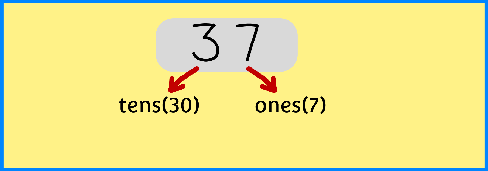
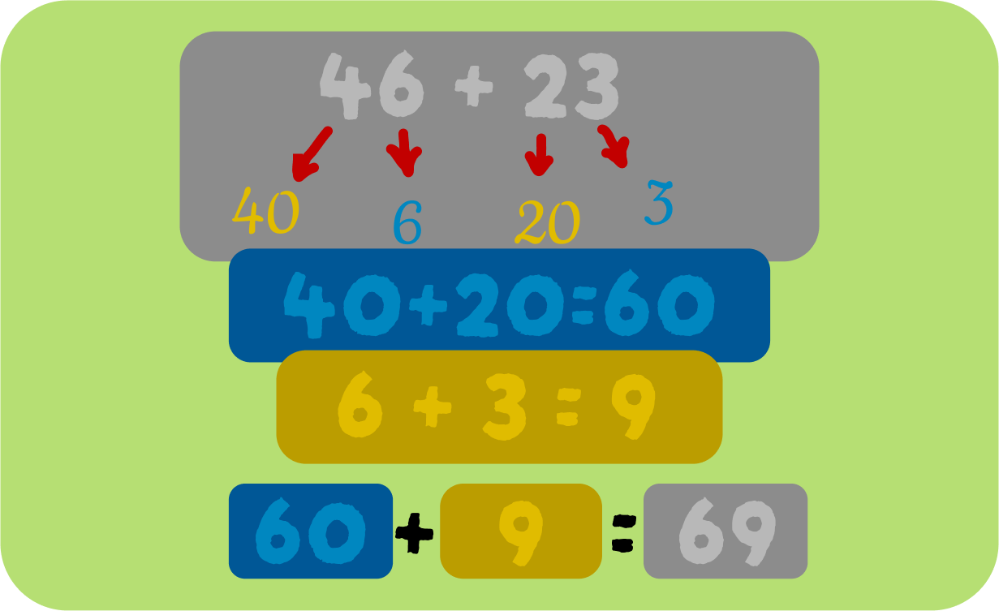

Adding 2 digits

Strategies to use in adding 2 digits
1 - Make it to ten (strategy)
firstly remember that (9+1),(8+2),(7+3),(6+4),(5+5) equals 10
and realize that (9+1) is the same if we make it (1+9) both equals 10
In the “make to the next ten” strategy, you adda number larger than the number given (such as the next multiple of ten) and then readjust the number by subtracting what was added
In the diagrams the relationships are indicated by the use of arrows
So, to add 37 + 65 you would
⦁ Add 3 to 37 to give 40
⦁ Subtract 3 from 65 to get 62
⦁ This becomes: 40 + 62 = 102
Test Yourself
Answer 14 + 28 by using Make ten to add Strategy
e.g. 37 + 65 = 40 + 62
2-Split strategy
You can add or subtract the tens separately to the ones (or units). For example, using the split strategy to add 46 + 23
⦁ split each number (decompose) into tens and ones: 46 + 23 = 40 + 6 + 20 + 3
⦁ rearrange the tens and ones 40 + 20 + 6 + 3
⦁ add the tens and then the ones 60 + 9 = 69

Using the split strategy for addition such as 37 + 65 would be similar, but there would be an
⦁ split or decompose the numbers into tens and ones: 30 + 7 + 60 + 5
⦁ rearrange the tens and ones: 30 + 60 + 7 + 5
⦁ add the tens and then the ones: 90 + 12
⦁ Split 12 (10 + 2) to give: 90 + 10 + 2 = 100 + 2 = 102
Test Yourself
Answer 34 + 21 by using Split Strategy
e.g. 46 + 23 = 40 + 20 + 6 + 3
3-Jump strategy
⦁ add two lots of ten to 46: 46 + 10 = 56 then 56 + 10 = 66
⦁ add 20 to 46 wich becoms 66
⦁ add the remaining 3 : 66 + 3 = 69
The two versions of this strategy can be shown using an empty number line. Using a blank or empty number line allows student to record their thinking and for teachers to analyse their thinking and determine the strategy they have attempted to use.